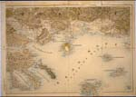

Balkan in kaart
Vijf eeuwen strijd om identiteit
Tentoonstelling van 4 september tot 16 oktober 2003 in de Universiteitsbibliotheek
Samenstelling: Harrie Teunissen en John Steegh
Tentoonstelling
kaarten 1 - 6, 7 - 9, 10
- 19, 20 - 29, 30
- 39, 40 - 47
Tenzij anders vermeld zijn de hier beschreven kaarten en gerelateerde stukken afkomstig uit de ‘Collectie Steegh & Teunissen’, te Leiden. Aan het eind van iedere uitgebreide objectbeschrijving is de naam van de auteur vermeld.
| 1. General Constantin
Teodorescu & professor Vasile Meritiu. România Mare cu numirele
românesti ale tuturor localitatilor. (Groot-Roemenië met roemeense
namen van alle plaatsen). Boekarest 1919. Schaal 1 : 650.000. 107 x
143 cm. (W.2p.12)
U ziet Roemenië op zijn grootst. Het komt voort uit de samenvoeging in 1861 van de vorstendommen |
||
| Moldavië en Walachije, eeuwenlang vazalstaten van het
Ottomaanse Rijk. Als gevolg van de nederlaag en vervolgens het
uiteenvallen van de veelvolkeren staat Oostenrijk-Hongarije in de
Eerste Wereldoorlog en de Russische Oktoberrevolutie is de staat in
omvang en bevolking meer dan verdubbeld. Nu horen ook Transsylvanië,
de Boekovina en Bessarabië er bij. Definitieve westgrenzen worden
pas vastgesteld bij het Verdrag van Trianon (juli 1920) en liggen
enige tientallen kilometers oostelijker dan de stippellijn op het
grensgebied van Roemenië en Hongarije. Ook de Banaat wordt verdeeld
tussen Joegoslavië en Roemenië. Desondanks verblijven sindsdien
ettelijke miljoenen hongaarstaligen op Roemeens territoir. (meer)
|
||
| 2. Karta
na Bulgarija. (Kaart van Bulgarije). Z.p. z.j. (Sofia ca. 1894). Schaal 1 : 420.000. 4 van de 10 vellen: 90 x 127 cm. (W.2e.8) Na de Russisch-Turkse Oorlog dicteert overwinnaar Rusland maart 1878 het Verdrag van San Stefano. Het voorziet in een autonoom Bulgarije met een christelijke vorst. 'San Stefano-Bulgarije', van de |
||
|  | ||
| Zwarte tot
de Egeïsche Zee, omvat ook het merendeel van Macedonië en Thracië.
Vier maanden later reduceert het Congres van Berlijn het nieuwe
vorstendom tot het gebied tussen het Balkangebergte en de Donau met
Vidin en Sofia. Daarnaast ontstaat Oost-Roemelië, een autonome
provincie binnen het Ottomaanse Rijk met Plovdiv als
gouverneursstad. De doorwerking van 'de verkrachting van San Stefano'
is enorm. Een machtige beweging wil het onrecht wreken, hen
aangedaan door de grote mogendheden. Voortaan ijvert en strijdt zij
voor de realisering van Groot-Bulgarije, d.w.z. San
Stefano-Bulgarije plus de Dobroedsja (ten zuiden van de Donau-delta)
en inclusief de steden Salonika en Edirne. Een eerste stap is de
annexatie van Oost-Roemelië in september 1885. De grens tussen
voormalig Oost-Roemelië en 'Klein-Bulgarije' is nog aangegeven. De
kaart past bij het nationalistische programma, op de onderste vellen
staat geen vierkante meter Bulgaars grondgebied. (meer)
|
||
| 3. Lt-Colonel M.
Botzaris. G.Q.G. de l'Armée Hellénique, Etat-Major Avant 2e Bureau
(section des affaires politiques): Carte Ethnographique de l'Épire
du Nord en 1913. Thessaloniki 1919. Schaal 1 : 200.000. 101,5 x 71,5 cm. (W.2a.7) Deze Griekse etnografische kaart van Noord-Epirus stelt vast dat in 1913 in dit door zowel Albanië als Griekenland geclaimde gebied 51 % van de bevolking hellenen zijn en 49 % albanezen. Onduidelijk is welke criteria er gehanteerd zijn om de nationale identiteit vast te stellen. De religie lijkt belangrijker te zijn dan de taal. Maar de Grieks-orthodoxe ritus is in deze regio ook verbreid onder groepen die albanees als moedertaal spreken en onder Grieks-orthodoxen treft |
||
| men veel lieden die zich identificeren met
de nationale albanese zaak. Na de Eerste Wereldoorlog brengt
Griekenland op de vredesconferentie van Parijs opnieuw haar claims
naar voren. De heruitgave van 1919 past in dit kader. Voor de
Griekse regering zijn de aanspraken op Smyrna (nu Izmir)
uiteindelijk belangrijker dan die op Noord-Epirus, vandaar dat dit
gebied na de internationale erkenning van Albanië (1921) toevalt
aan de regering in Tirana. (meer)
|
||
| 4. Richard von Mach. Karte
der Schulsphären der Türkischen Balkan-Halbinsel. Uit: Petermanns
Mittheilungen 45, 1899. Schaal 1 : 3.700.000. 44,5 x 57 cm.
(U.2a.7) Deze vier kaartjes geven de verbreiding en relatieve invloedssfeer aan van de griekse, bulgaarse, |
||
| roemeense en servische scholen. De
weinige albanese scholen en de turkse
staatsscholen worden helaas niet aangegeven. De schoolstrijd in
Europees Turkije blijkt vooral in Macedonië te woeden. De kinderen
zijn daar dus inzet van een intense wedijver en schoolmeesters zijn
vaak politieke vertegenwoordigers van nationale bewegingen. (meer)
|
||
| 5. Prof. Ahmet Gashi.
Shqipëria, Hartë Etnike, Shkalla 1 : 550.000. Albania, Ethnic Map, Scale 1: 550.000. Z.p. z.j. (Tirana 2001). 95 x 54 cm. (Y.2a.1) Deze 'ethnische kaart' uit 2001 gaat ervan uit dat de albaneestaligen de 'historische eigenaren' zijn van het door paars-zwarte grenslijnen afgebakende gebied. De kaart is echter verdacht. Allereerst omsluit deze grens diverse regio's waar tegenwoordig nog maar kleine groepen albaneessprekenden wonen, zoals in het nu Griekse Epirus. Tegenwoordig leven en werken er aanzienlijk meer albanezen, al of niet legaal, in en rond Athene. Bovendien geeft de kaart binnen het etnisch-albanese gebied geen andere grenzen aan dan die van het 'moederland'. Zij wekt dus de indruk dat internationaal erkende grenzen irrelevant zijn bij |
||
| het streven naar vereniging van alle
albanezen. De kaart maakt ook geen onderscheid tussen meerderheid en
minderheid. Zo kent een groot deel van het Macedonië (FYROM) binnen
dit etnisch-Albanië geen albanese meerderheid. Ook etnische
minderheden binnen Albanië zelf, de grieks sprekende orthodoxen, de
roma, de vlachen en de slavische macedoniërs, worden niet getoond.
En dat noemt men een etnische kaart! (meer)
|
||
| 6. Odhise Grillo. Po
ku je, Adem Jashari! ('Waar ben je, Adem Jashari?') Tirana 1999. 29,5 x 42 cm. Het boekje 'Waar ben je, Adem Jashari?' is bestemdvoor de schoolgaande jeugd. Het gaat over het heldhaftige leven en sterven van Adem Jashari |
||
| (1945-1998), leider van het UÇK in
Centraal Kosovo. Het verhaal wordt verteld door zijn dochter, de
enige overlevende van zijn familie. Adem Jashari stuurt aan op 'de
vereniging, desnoods gewapenderhand, van alle albanese gebieden in
Servië, Montenegro en Macedonië tot één Groot-Albanië'. Dat
blijkt ook uit de getoonde illustratie waar de held voor de Albanese
vlag en voor een kaart van Groot-Albanië staat (zie ook nr. 5).
Adem Jashari en de zijnen worden gedood door Servische troepen met
zware wapens als hij, na Dayton, de albanese guerillastrijd in de
nieuwe fase van 'bevrijde territoria' poogt te brengen. (meer)
|
||
| vorige pagina | volgende pagina |